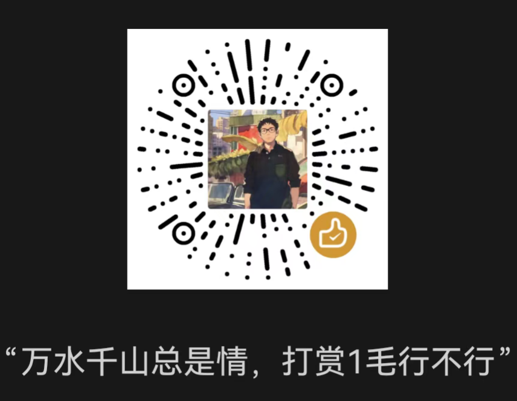

📈
股神成长之路
v5.0 · 成长路线版
本金10000元，经历A股十年真实场景，从韭菜到股神的蜕变
📜 股神成长路线
🌱
入市新手
📈
摸爬滚打
💡
投资觉醒
👑
股神进阶
你的投资代号
🎲 换一个
选择你的投资风格（每个选项都有一个最适合你的选择）
📊
技术派
K线 / 均线 / 量价分析
擅长：趋势跟踪、止损纪律、ETF轮动
🔍
价值派
财报 / 估值 / 安全边际
擅长：年报分析、逆向投资、高股息
⚡
题材猎手
热点 / 政策 / 事件驱动
擅长：概念炒作、海外映射、游资博弈
🧘
佛系投资
定投 / 配置 / 长期持有
擅长：指数定投、资产配置、不动如山
开始我的投资生涯
继续投资旅程 →
玩家
资产
10,000
阶段
进度
最终资产
总收益率
投资风格
风格加成次数
📊 投资能力画像
📜 成长路线回顾
📅 投资 Timeline
📤 分享我的投资故事
🏆 投资排行榜
🗑️ 清空
"万水千山总是情，打赏1毛行不行"

微信扫一扫 · 感谢支持 👍